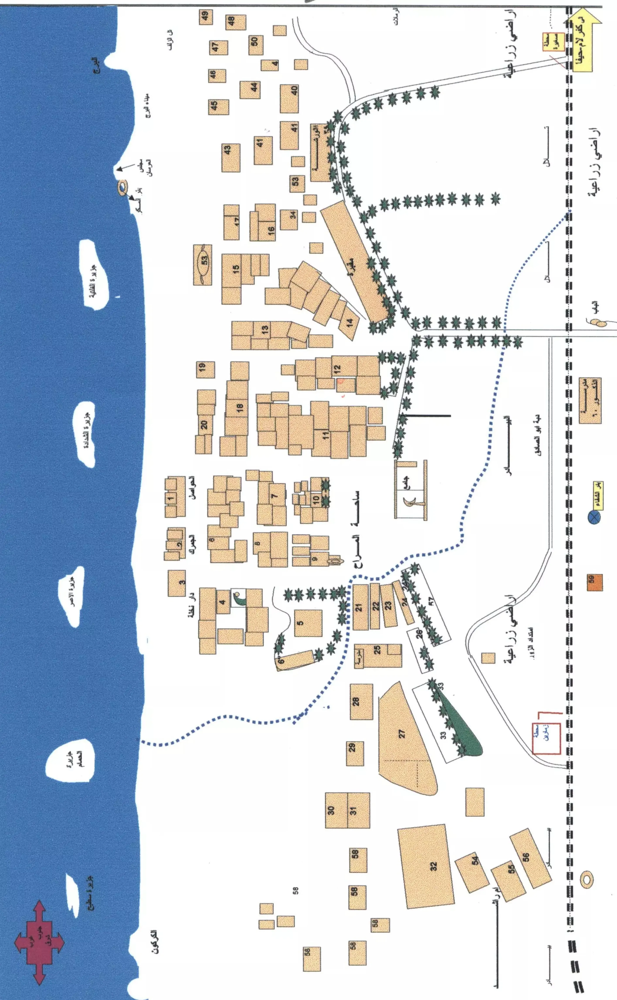
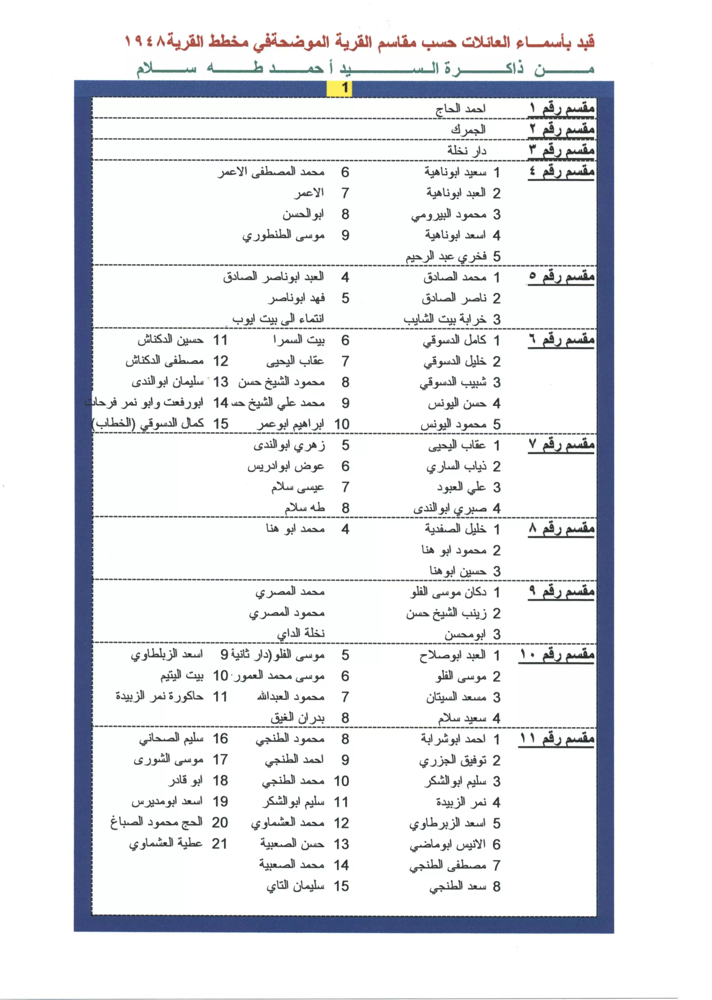
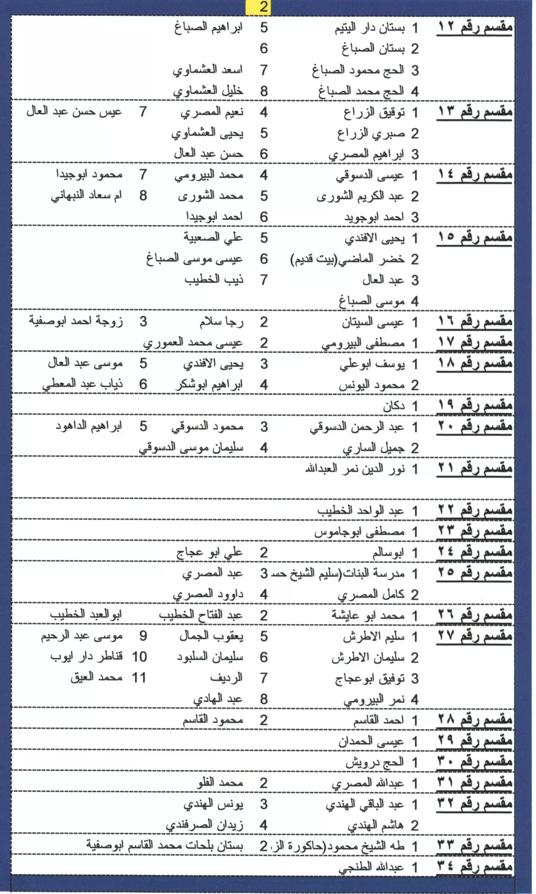
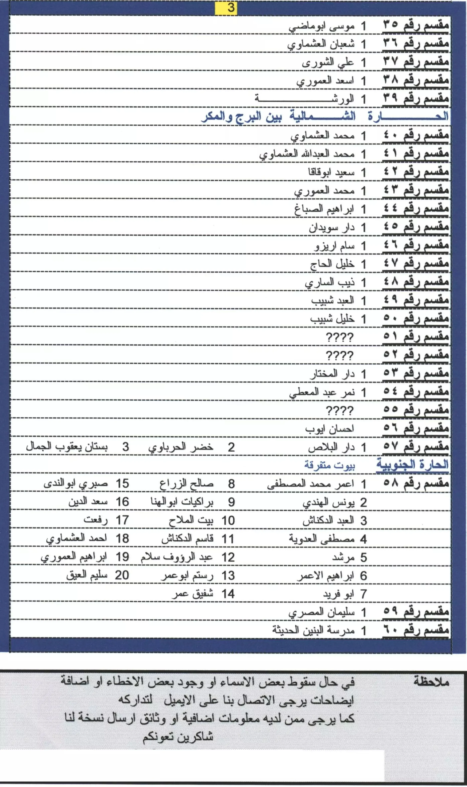

تنتمي عائلة آل ماضي / أبو ماضي / الماضي إلى قرية الطنطورة في قضاء حيفا، وتعود في أصلها القروي والتاريخي إلى إجزم من بني هرماس، حيث كان مركز آل ماضي التاريخي في قضاء حيفا.
يمتد حضور العائلة بين قريتين أساسيتين في الذاكرة الفلسطينية: إجزم، بوصفها المركز التاريخي الأقدم لآل ماضي، والطنطورة، حيث استقر فرع من العائلة وعُرف باسم آل أبو ماضي. وقد بقي الاسمان متداخلين في الذاكرة القروية والمصادر الفلسطينية؛ فاسم آل ماضي يرتبط بالمركز التاريخي في إجزم، بينما يمثل اسم آل أبو ماضي الفرع الطنطوري المعروف من العائلة.
تقوم هذه الوثيقة على ثلاث طبقات من الشواهد: الشاهد القروي الذي يربط آل أبو ماضي في الطنطورة بإجزم من بني هرماس، والشاهد التاريخي الذي يثبت مركزية آل ماضي في إجزم والساحل الكرملي، والشاهد العائلي والوطني الذي يحفظ أسماء فرع أبو ماضي في الطنطورة واللجوء. وبهذه الطبقات تُقرأ العلاقة بين آل ماضي وآل أبو ماضي بوصفها علاقة مركز وفرع داخل المجال القروي نفسه.
← اقرأ النسخة المختصرة من هذه القصة
العلاقة بين “آل ماضي” و“آل أبو ماضي”
يمثل اختلاف الصيغة بين “آل ماضي” و“آل أبو ماضي” نمطًا مألوفًا في أسماء العائلات الفلسطينية؛ إذ تحتفظ العائلة باسمها الأصلي في مركزها التاريخي، بينما يُعرف فرع منها في قرية أخرى باسم محلي أو كنية عائلية تستقر مع الوقت كاسم ثابت للفرع.
وفي حالة هذه العائلة، يظهر الربط بوضوح في سجل عائلات الطنطورة، حيث ورد:
“آل أبو ماضي: أصلهم من أجزم من بني هرماس وهناك مركزهم، ومن زعامة آل ماضي في الطنطورة محمد الماضي (أبو يحيى).”
هذه الصياغة تجمع الاسمين في سياق واحد: آل أبو ماضي كاسم الفرع في الطنطورة، وآل ماضي كاسم العائلة التاريخي، مع ذكر محمد الماضي، أبو يحيى من زعامة الفرع في الطنطورة.
وتعكس هذه الصيغة العلاقة الطبيعية بين الاسمَين: آل ماضي هو الاسم التاريخي الأوسع المرتبط بإجزم، وآل أبو ماضي هو اسم الفرع الطنطوري المستقر من العائلة.
والأهمية هنا ليست في تشابه الاسمين وحده، بل في اجتماع ثلاث صيغ في نص واحد: “آل أبو ماضي” كاسم الفرع، و“آل ماضي” كاسم الزعامة، و“محمد الماضي” كاسم الشخص المرتبط بزعامة الفرع في الطنطورة.
ويعزز هذا الارتباط أيضًا وجود وادي أبو ماضي جنوب إجزم، مما يدل على أن صيغة “أبو ماضي” حاضرة في الجغرافيا المرتبطة بإجزم نفسها، إلى جانب حضورها المعروف في الطنطورة.
الجغرافيا القروية بين إجزم والطنطورة
لا يمكن فهم حضور آل أبو ماضي في الطنطورة بمعزل عن القرب الجغرافي والاجتماعي بين الطنطورة وإجزم. فالطنطورة قرية ساحلية في قضاء حيفا، وتقع إجزم على نحو 8 كم شرق الطنطورة ضمن محيط جنوب الكرمل، وهي مسافة قصيرة جعلت الحركة بين القريتين أمرًا اعتياديًا في الحياة اليومية والاقتصادية والاجتماعية.
ومن المعروف في القرى الفلسطينية أن تستقر فروع من العائلة في قرية قريبة، فيبقى الاسم التاريخي في المركز الأصلي، بينما يكتسب الفرع اسمًا محليًا متداولًا في القرية التي استقر فيها.
ومن هنا يظهر الامتداد بين إجزم والطنطورة بصورة طبيعية: آل ماضي في إجزم، وآل أبو ماضي في الطنطورة.
ولا يظهر هذا النمط في فرع أبو ماضي وحده؛ فالمصادر القروية تذكر أيضًا آل خديش، وهم من أقارب آل ماضي وسكان إجزم، مع وجود فرع لهم في الطنطورة. كما تذكر المصادر القروية فروعًا أخرى ذات صلة بإجزم استقرت في الطنطورة، منها آل الشورى وآل البجيرمي وآل أبو عجاج. وهذا التكرار في حركة الفروع من القرية الجبلية إلى الساحل يضع فرع آل أبو ماضي ضمن سياق قروي أوسع، لا كحالة منفردة.
إجزم: المركز التاريخي لآل ماضي
تُعد إجزم المركز التاريخي الأبرز لآل ماضي في قضاء حيفا. وتظهر إجزم في دفاتر التحرير العثمانية سنة 1596م ضمن ناحية الشفا من لواء اللجون، كقرية صغيرة قائمة في جنوب الكرمل، اعتمد أهلها على الزراعة وتربية الماشية. وتفيد هذه الطبقة العثمانية المبكرة في فهم عمق القرية التاريخي قبل بروز زعامة آل ماضي فيها خلال القرون اللاحقة.
وتشير قراءة د. محمد عقل لسجل نفوس عثماني لقرية إجزم سنة 1913م إلى أن الماضي كانت أكبر حمائل القرية وأغناها، كما يرد اسم خديش ضمن عائلات إجزم، وهي العائلة التي تذكرها مصادر الطنطورة بوصفها من أقارب آل ماضي.
ويظهر حضور آل ماضي في إجزم من خلال شخصية الشيخ مسعود الماضي، أحد أبرز زعماء الساحل الكرملي في النصف الأول من القرن التاسع عشر. وقد ارتبط اسم آل ماضي بنفوذهم في الساحل جنوب الكرمل والمنحدرات الغربية لجبل نابلس، وبمقرهم الأساسي في إجزم، حيث ارتبطت العائلة بالقلعة والمضافة والحضور السياسي والاجتماعي في المنطقة.
وتبرز مكانة آل ماضي في القرن التاسع عشر من خلال الشيخ مسعود الماضي، الذي تولى حكم غزة ويافا سنة 1831م بصفة متسلّم، وكان زعيم الساحل الكرملي في عهده. وحين فرض إبراهيم باشا، ابن محمد علي، سياسات التجنيد الإجباري ونزع السلاح والضرائب على بلاد الشام، قادت عائلة الماضي دورًا محوريًا في ثورة الفلاحين سنة 1834م، إلى جانب زعامات محلية أخرى من آل عبد الهادي وآل قاسم الأحمد وآل جرار وآل البرغوثي. وقد انتهت تلك المرحلة بإعدام الشيخ مسعود الماضي، وبفرار عدد من أفراد العائلة مؤقتًا إلى الأستانة، قبل أن تستعيد العائلة حضورها الإداري والسياسي لاحقًا. ويُذكر أن محمد الماضي تولى حكم حيفا سنة 1855م، وهو ما يعكس استمرار هذا الحضور على مستوى قضاء حيفا ومحيطه.
وتشير الدراسات التاريخية، اعتمادًا على وثائق الخارجية البريطانية FO 78/1120 كما نقلها ألكسندر شولش في دراسته عن فلسطين في مرحلة التحول، إلى الحضور الإداري والسياسي لآل ماضي في القرن التاسع عشر، ومن ذلك ارتباط الشيخ مسعود الماضي بحكم غزة سنة 1831م، ودور العائلة في أحداث سنة 1834م، وذكر محمد الماضي في سياق حكم حيفا سنة 1855م. وتُعزز هذه الإشارات صورة آل ماضي بوصفهم بيت زعامة إجزميًا امتد حضوره إلى الساحل الكرملي وقضاء حيفا.
وتشير تقارير القناصل البريطانيين إلى استمرار أهمية إجزم في منتصف القرن التاسع عشر؛ ففي سنة 1859م، أفاد القنصل البريطاني روجرز عند زيارته للقرية بأن عدد سكانها بلغ نحو ألف نسمة، وأنهم يزرعون نحو 64 فدانًا من الأراضي. وتأتي هذه الإشارة ضمن السياق التاريخي الذي يبرز فيه حضور آل ماضي في إجزم والساحل الكرملي.
وتتناول دراسة الباحث خالد محمد صافي عن معين الماضي زعامة آل ماضي في إجزم منذ أواخر القرن الثامن عشر وحتى النصف الأول من القرن التاسع عشر، بوصفها نموذجًا للزعامة السياسية الفلسطينية التقليدية في مرحلة الانتداب. وتُعد هذه الدراسة من المصادر الأكاديمية المهمة عن العائلة.
ويظهر حضور آل ماضي في إجزم أيضًا في البنى العمرانية التي شيدتها العائلة، ومنها المضافة التاريخية “الديوان” التي تعود إلى القرن السابع عشر الميلادي، والقلعة الكبيرة المحصنة، إلى جانب مسجدي القرية. وهذه البنى مجتمعة تجعل إجزم المقر العمراني والرمزي للعائلة، لا مجرد موضع سكن.
ويظهر عمق هذا الحضور في طبقتين زمنيتين متباعدتين: الأولى في قراءة د. محمد عقل لدفتر ضريبة عثماني سنة 945هـ / 1538م، حيث يرد اسم هرماس زيد بين دافعي الضرائب في إجزم؛ والثانية في سجل نفوس عثماني للقرية سنة 1913م، حيث يرد اسم الماضي بكثافة، وتوصف العائلة بأنها أكبر حمائل إجزم وأغناها. وبهاتين الطبقتين تظهر إجزم في المصادر بوصفها المجال الذي يجتمع فيه اسم بني هرماس من جهة، وبيت الماضي من جهة أخرى.
آل أبو ماضي في الطنطورة
في الطنطورة، استقر اسم آل أبو ماضي كاسم الفرع المحلي المعروف من العائلة. وتظهر العائلة في سجل عائلات الطنطورة ضمن العائلات المعروفة في القرية، مع الإشارة إلى أصلها من إجزم من بني هرماس.
ويأتي توثيق عائلات الطنطورة وشهادات أبنائها ضمن مشروع توثيقي مهم أنجزه الباحث مصطفى الولي، لا سيما في كتابه “شرك الدم: الطنطورة معركة ومجزرة”، الصادر في دمشق سنة 2001م، والمبني على مقابلات موسعة مع ناجي الطنطورة في مخيم اليرموك وحي القابون في دمشق ومخيم الرمل في اللاذقية. وقد شكّلت هذه المواد أحد الأسس التي حفظت أسماء العائلات والضحايا والناجين بعد النكبة.
وتعود أهمية توثيق مصطفى الولي إلى أنه لم يحفظ أحداث المجزرة فقط، بل حفظ كذلك ذاكرة العائلات والأسماء كما روتها جماعة الطنطورة في اللجوء، ولا سيما في سورية. ومن هنا تأتي قيمة ورود آل أبو ماضي ضمن عائلات القرية، وورود أسماء من العائلة في قوائم الشهداء والناجين.
وقد أحصى مشروع مصطفى الولي التوثيقي نحو 36 عائلة في الطنطورة قبيل النكبة، وورد فيها آل أبو ماضي ضمن العائلات المعروفة في القرية، بوصفهم فرعًا استقر في الطنطورة وأصله من إجزم. وهذا التصنيف ينسجم مع قراءة المركز والفرع التي تعتمدها هذه الوثيقة.
كما تثبت قوائم شهداء الطنطورة حضور العائلة في جيل النكبة، إذ ورد اسم:
الشهيد رشيد ابن عمر أبو ماضي
الشهيد حسن أنيس أبو ماضي
ضمن شهداء القرية سنة 1948م.
ويرد كذلك اسم فواز أنيس أبو ماضي، المولود سنة 1929م، في تقرير Forensic Architecture عن الإعدامات والمقابر الجماعية في الطنطورة، بوصفه أحد ناجي القرية. وتُعد هذه الشهادة من الشواهد المستقلة المهمة التي توثق حضور اسم أبو ماضي في الطنطورة في جيل النكبة.
كما تحفظ ذاكرة الطنطورة واللجوء أسماء أخرى من العائلة، منها يحيى أبو ماضي، المرتبط بذاكرة مخيم اليرموك ومدرسة الكرمل، وماجد أبو ماضي المولود في دمشق سنة 1956م، والذي تعود أصوله إلى الطنطورة، وكذلك وحيد عمر أبو ماضي، الذي يرد في رسالة الأسير شفيق إبراهيم العيق، الأسير رقم 3951، ضمن مراسلات الأسرى المحفوظة في الذاكرة الفلسطينية، وهو شاهد إضافي على حضور العائلة في الطنطورة وذاكرة اللجوء.
مخطط القرية وأسماء الأهالي
فيما يلي صفحات من مخطط قرية الطنطورة وأسماء أهاليها قبل النكبة، تكشف عن نسيج العائلات في القرية، ومنها آل أبو ماضي، وتُعد من المراجع المهمة في توثيق سجل العائلات الطنطوري.




أسماء موثقة من آل أبو ماضي في الطنطورة
| الاسم | موضع الظهور | الدلالة |
|---|---|---|
| محمد الماضي، أبو يحيى | زعامة آل ماضي في الطنطورة | يجمع اسم الماضي بفرع الطنطورة |
| رشيد ابن عمر أبو ماضي | شهداء الطنطورة سنة 1948م | يثبت حضور الفرع في جيل النكبة |
| حسن أنيس أبو ماضي | شهداء الطنطورة سنة 1948م | شاهد آخر من العائلة في أحداث القرية |
| فواز أنيس أبو ماضي | ناجٍ من الطنطورة، مواليد 1929م | شاهد مستقل على حضور الاسم |
| يحيى أبو ماضي | ذاكرة الطنطورة واليرموك | امتداد الاسم في اللجوء |
| وحيد عمر أبو ماضي | مراسلات الأسرى والذاكرة الفلسطينية | اسم إضافي من فرع عمر أبو ماضي |
| ماجد أبو ماضي | مولود في دمشق سنة 1956م، وأصوله من الطنطورة | استمرار الفرع في الشتات |
فرع الشهيد رشيد عمر أبو ماضي
من فرع الطنطورة يأتي وصفي رشيد عمر أبو ماضي، ابن الشهيد رشيد ابن عمر أبو ماضي، الوارد اسمه في قوائم شهداء الطنطورة سنة 1948م.
ومن أبناء وبنات وصفي رشيد عمر أبو ماضي:
باسل، محمد، علاء، وسيم، لؤي، ميسون، وسهير.
وتعرض شجرة “هوية” لعائلة أبو ماضي – الطنطورة، حيفا تسلسلًا عائليًا يبدأ بـ قاسم ثم عمر ثم رشيد ثم وصفي، ويظهر تحت وصفي عدد من أبنائه. وبذلك يلتقي الثابت العائلي مع السجل العائلي المنشور في تأكيد فرع وصفي من عائلة أبو ماضي الطنطورية.
فرع وحيد عمر أبو ماضي وصلته بفرع رشيد
تحفظ الثوابت العائلية أن وحيد عمر أبو ماضي هو شقيق رشيد عمر أبو ماضي، وأنهما من فرع عمر أبو ماضي في الطنطورة. ويأتي ذكر وحيد عمر أبو ماضي في مواد الذاكرة الفلسطينية ضمن مراسلات الأسرى، مما يضيف اسمًا آخر من هذا الجيل إلى أسماء العائلة المحفوظة في ذاكرة الطنطورة واللجوء.
ومن فرع وحيد عمر أبو ماضي جاء ابنه عمر أبو ماضي، ومن أبنائه:
وحيد، محمد، سعد، مريم، سعدية، آمنة، وعبدالله.
وتحفظ الثوابت العائلية كذلك صلة لاحقة بين فرعي الأخوين رشيد ووحيد، من خلال زواج سعدية عمر أبو ماضي، من فرع وحيد عمر أبو ماضي، من وسيم وصفي أبو ماضي، من فرع وصفي رشيد عمر أبو ماضي. وبذلك يلتقي الفرعان مرة أخرى داخل العائلة، في امتداد يحفظ صلة الأخوين رشيد ووحيد وذرية كل منهما.
الطنطورة والنكبة واللجوء إلى سورية
وقعت مجزرة الطنطورة من ليل 22 إلى فجر 23 أيار/مايو 1948م، وتعرض أهل القرية للتهجير، فتوزعوا بين الفريديس ومخيمات الشتات في سورية ولبنان والضفة الغربية.
وكان من شهداء القرية الشهيد رشيد ابن عمر أبو ماضي، والد وصفي رشيد عمر أبو ماضي، إلى جانب الشهيد حسن أنيس أبو ماضي. وإلى جانب أسماء الشهداء، تحفظ ذاكرة الطنطورة أسماء من العائلة ارتبطوا بشهادة النكبة واللجوء، منهم فواز أنيس أبو ماضي ويحيى أبو ماضي.
وانتقل فرع من عائلة أبو ماضي، مثل كثير من أهالي الطنطورة، إلى مخيمات اللاجئين في سورية، ولا سيما مخيم اليرموك في دمشق، الذي أصبح لاحقًا من أبرز تجمعات اللاجئين الفلسطينيين.
وتذكر مؤسسة الدراسات الفلسطينية أن الباحث مصطفى الولي جمع شهادات من أبناء الطنطورة، وأن معظم أصحاب الشهادات كانوا يعيشون في سورية، خصوصًا في مخيم اليرموك وحي القابون ومخيم الرمل في اللاذقية. وهذا يعكس الدور الكبير لأبناء الطنطورة في سورية في حفظ ذاكرة القرية ورواية أحداثها.
الحضور الوطني لآل ماضي
لم يقتصر حضور آل ماضي على الزعامة القروية في إجزم، بل امتد إلى الحياة الوطنية الفلسطينية. فقد برز من العائلة في القرن العشرين القيادي الفلسطيني معين الماضي، المولود في إجزم سنة 1887م والمتوفى في دمشق سنة 1957م.
كان معين الماضي من الشخصيات السياسية البارزة في مرحلة الانتداب البريطاني ومن رموز الحركة الوطنية الفلسطينية. وقد شغل عضوية الهيئة العربية العليا، وشارك في تنظيم مؤتمر بلودان سنة 1937م بوصفه أحد الملتقيات السياسية العربية الكبرى المرتبطة بالقضية الفلسطينية في مرحلة الانتداب، إلى جانب دوره في الحياة الحزبية والمؤسسات الوطنية الفلسطينية.
وتظهر الصلة بين الطنطورة وآل ماضي أيضًا في أحداث سنة 1948م؛ إذ تذكر شهادات منشورة أن بعض أعيان الطنطورة تواصلوا مع معين الماضي في لبنان ضمن محاولات تأمين السلاح للقرية قبل سقوطها. وتعكس هذه الإشارة استمرار العلاقة بين الطنطورة ورموز آل ماضي حتى سنة النكبة.
كما برز دور آل ماضي في الحياة القروية والوطنية في قضاء حيفا من خلال جمعية تعاون القرى التي انطلقت من إجزم سنة 1924م، وشارك فيها ممثلون عن قرى حيفا، ومن بينها الطنطورة، إلى جانب شخصيات من آل ماضي مثل معين الماضي ونايف الماضي.
بني هرماس والإطار العشائري
تنتسب عائلة آل ماضي / أبو ماضي / الماضي في أصلها القروي إلى إجزم من بني هرماس. وتذكر الموسوعة الفلسطينية بني هرماس في قرية إجزم – حيفا ضمن بطون بني جرم من طيء التي استقرت في فلسطين، وهو ما ينسجم مع الرواية القروية المحفوظة في مصادر الطنطورة وإجزم.
وفي الذاكرة القروية المرتبطة بإجزم، يرد بني هرماس بوصفه إطارًا عشائريًا يجمع بصورة خاصة بين بيت الماضي وبيت خديش، وهما الاسمان اللذان يتكرران في صلة إجزم بالطنطورة. وهذا يجعل الإشارة إلى بني هرماس في سجل عائلات الطنطورة أكثر اتساقًا مع بنية إجزم العائلية نفسها.
ويعرض كتاب “نظرات في تاريخ عشيرة الوحيدات” لجميل عياد الوحيدي مادة عن بني هرماس والوحيدات وبني عطية، وينقل عن مصطفى الدباغ في “بلادنا فلسطين” ذكر آل الماضي، زعماء إجزم من أعمال حيفا، ضمن هذا السياق العشائري الأوسع.
وتُدرج هذه المادة في سياقها العشائري العام، بينما يبقى التعريف الأقرب والأوضح للعائلة:
آل ماضي / أبو ماضي / الماضي من الطنطورة، وأصلهم القروي والتاريخي من إجزم من بني هرماس، حيث كان لآل ماضي حضور تاريخي بارز في قضاء حيفا.
شواهد ودلالات أساسية
| المحور | الشاهد | دلالته |
|---|---|---|
| عائلات الطنطورة | ورود اسم آل أبو ماضي ضمن عائلات الطنطورة | يثبت حضور الفرع في القرية |
| الربط بإجزم | النص القروي: أصلهم من إجزم من بني هرماس | يربط الفرع الطنطوري بالمركز التاريخي |
| اسم آل ماضي | ذكر آل ماضي ومحمد الماضي أبو يحيى في مدخل آل أبو ماضي | يجمع الاسمين في سياق واحد |
| الجغرافيا | قرب إجزم من الطنطورة، بنحو 8 كم | يوضح طبيعية الامتداد بين القريتين |
| إجزم | سجل نفوس عثماني سنة 1913م يذكر أن الماضي أكبر حمائل القرية | يثبت مركزية آل ماضي في إجزم |
| بني هرماس | دفتر ضريبة عثماني سنة 1538م يذكر اسم هرماس في إجزم | شاهد مبكر على حضور الاسم في القرية |
| جغرافيا إجزم | وجود وادي أبو ماضي جنوب إجزم | يعزز حضور صيغة أبو ماضي في محيط إجزم |
| شهداء الطنطورة | رشيد ابن عمر أبو ماضي وحسن أنيس أبو ماضي | يثبت حضور العائلة في جيل النكبة |
| الناجون | فواز أنيس أبو ماضي، مواليد 1929م | شاهد مستقل على حضور الاسم في الطنطورة |
| الذاكرة الوطنية | التواصل مع معين الماضي سنة 1948م | يوضح استمرار الصلة بين الطنطورة وآل ماضي |
| اللجوء | حضور العائلة في سورية ومخيم اليرموك | يثبت امتداد الفرع الطنطوري بعد النكبة |
| امتداد فرعي رشيد ووحيد | زواج سعدية عمر أبو ماضي من وسيم وصفي أبو ماضي | يوضح استمرار الصلة بين ذرية الأخوين رشيد ووحيد داخل العائلة |
مصادر إضافية مهمة عن إجزم وآل ماضي
من المصادر المهمة للتوسع في تاريخ إجزم وآل ماضي كتاب “قرية إجزم: قصة الحمامة البيضاء” لمروان الماضي، الصادر في دمشق سنة 1994م. وتذكر فهرسة المكتبة الوطنية الإسرائيلية أن آخر الكتاب يحتوي على وثيقة الشيخ مسعود الماضي التي كتبها سنة 1244هـ / 1830م.
وتذكر موسوعة القرى الفلسطينية أيضًا مؤلفات أخرى عن إجزم، منها:
كتيب ديوان أهالي إجزم في الأردن
كتاب لبيب عبد السلام قدسية عن إجزم
كتاب مروان الماضي عن إجزم
وتُعد هذه المصادر مراجع مهمة للتوسع في تاريخ إجزم وآل ماضي، ولا سيما عند إعداد نسخة بحثية أو كتاب موسع عن العائلة.
وتبقى بعض المصادر ذات أهمية خاصة للتوسع البحثي مستقبلاً، ومنها سجلات محكمة حيفا وعكا الشرعية، وسجلات الأراضي، والنسخة الكاملة من كتاب “شرك الدم”، ومجلد قضاء حيفا من “بلادنا فلسطين”، وأرشيف التاريخ الشفوي الفلسطيني في الجامعة الأميركية في بيروت. وهذه المصادر لا تغيّر التعريف الأساسي للعائلة، لكنها قد تضيف تفاصيل أوسع عن انتقال الفروع والأسماء والملكية والقرابة.
الخلاصة الجامعة
آل ماضي / أبو ماضي / الماضي عائلة فلسطينية من قرية الطنطورة في قضاء حيفا، تعود في أصلها القروي والتاريخي إلى إجزم من بني هرماس.
يظهر اسم آل ماضي في إجزم بوصفه الاسم التاريخي الأوسع للعائلة، بينما استقر اسم آل أبو ماضي في الطنطورة كاسم الفرع المحلي المعروف. وقد جمع سجل عائلات الطنطورة الاسمين في نص واحد، حين ذكر آل أبو ماضي، ثم نسب أصلهم إلى إجزم، وذكر من زعامة آل ماضي في الطنطورة محمد الماضي، أبو يحيى.
وقد عُرفت إجزم بوصفها مركز آل ماضي التاريخي، وورد اسم الماضي في سجل نفوس عثماني للقرية سنة 1913م كأكبر حمائلها وأغناها، كما ارتبط اسم العائلة بالشيخ مسعود الماضي ونفوذها في الساحل الكرملي في القرن التاسع عشر. ويمتد عمق الاسم في إجزم إلى ذكر هرماس زيد في دفتر ضريبة عثماني سنة 945هـ / 1538م.
وفي الطنطورة، استقر اسم آل أبو ماضي كاسم الفرع الساحلي المعروف، وظهر في قوائم الشهداء وشهادات الناجين وذاكرة اللجوء. ومن هذا الفرع الشهيد رشيد ابن عمر أبو ماضي، ومن ذريته وصفي رشيد عمر أبو ماضي وأبناؤه:
باسل، محمد، علاء، وسيم، لؤي، ميسون، وسهير.
كما تحفظ الثوابت العائلية صلة فرع رشيد عمر أبو ماضي بفرع شقيقه وحيد عمر أبو ماضي، ومنه عمر وحيد أبو ماضي وأبناؤه: وحيد، محمد، سعد، مريم، سعدية، آمنة، وعبدالله، بما يعزز امتداد الفرع الطنطوري واستمرار صلاته الداخلية في الشتات.
المصادر
موسوعة القرى الفلسطينية – الطنطورة، عائلات القرية وعشائرها تذكر آل أبو ماضي ضمن عائلات الطنطورة، وتورد أصلهم من إجزم من بني هرماس، وتذكر زعامة آل ماضي في الطنطورة.
موسوعة القرى الفلسطينية – شهداء الطنطورة تذكر الشهيد حسن أنيس أبو ماضي والشهيد رشيد ابن عمر أبو ماضي.
عرب 48 – قراءة في سجل نفوس عثماني لقرية إجزم سنة 1913، د. محمد عقل تذكر أن الماضي كانت أكبر حمائل إجزم وأغناها.
د. محمد عقل – قراءة في دفتر ضريبة عثماني لإجزم سنة 945هـ / 1538م تورد اسم هرماس زيد ضمن دافعي الضرائب في إجزم.
دفاتر التحرير العثمانية – لواء اللجون سنة 1596م تذكر إجزم ضمن ناحية الشفا من لواء اللجون، وتفيد في إظهار عمق القرية العثماني المبكر.
PalQuest – مادة إجزم تذكر مسعود الماضي، ونفوذ آل ماضي في إجزم، وقلعة العائلة، ووادي أبو ماضي جنوب القرية.
وثائق الخارجية البريطانية FO 78/1120، كما نقلها ألكسندر شولش في Palestine in Transformation تورد إشارات إلى حضور آل ماضي السياسي والإداري في القرن التاسع عشر.
تقرير القنصل البريطاني روجرز – إجزم 1859م يفيد بأهمية إجزم وسكانها وزراعتها في منتصف القرن التاسع عشر.
خالد محمد صافي – “معين الماضي أنموذجًا” دراسة أكاديمية تتناول زعامة آل ماضي في إجزم وشخصية معين الماضي.
PalQuest – سيرة معين الماضي تذكر مولده في إجزم سنة 1887م، ووفاته في دمشق سنة 1957م، ودوره في الحركة الوطنية الفلسطينية.
Forensic Architecture – Executions and Mass Graves in Tantura, 23 May 1948 يذكر شهادة فواز أنيس أبو ماضي، المولود سنة 1929م، بوصفه أحد ناجي الطنطورة.
مؤسسة الدراسات الفلسطينية – شهادات الطنطورة / مصطفى الولي توثق شهادات أبناء الطنطورة، ولا سيما أبناء القرية في سورية ومخيمات اللجوء.
مصطفى الولي – شرك الدم: الطنطورة معركة ومجزرة مصدر مهم في حفظ شهادات أبناء الطنطورة وأسماء العائلات والضحايا والناجين.
Palestine Remembered – الطنطورة يحفظ مواد من ذاكرة القرية، ومنها ما يتعلق برسالة الأسير شفيق إبراهيم العيق إلى وحيد عمر أبو ماضي.
هوية – شجرة عائلة أبو ماضي، الطنطورة – حيفا تعرض فرع العائلة وتسلسل قاسم، عمر، رشيد، وصفي، وأبناء وصفي.
هوية – قصة/ترجمة ماجد أبو ماضي تذكر أن ماجد أبو ماضي مولود في دمشق سنة 1956م، وأن أصوله من الطنطورة، وأن والده يحيى أبو ماضي كان يدرّس في مدرسة الكرمل في مخيم اليرموك.
موسوعة القرى الفلسطينية – إجزم، التاريخ النضالي والفدائيون تورد جمعية تعاون القرى التي انطلقت من إجزم سنة 1924م، وتذكر مشاركة قرى حيفا ومنها الطنطورة وشخصيات من آل ماضي.
الموسوعة الفلسطينية – البداوة والاستقرار تذكر بني هرماس في قرية إجزم ضمن بطون بني جرم من طيء.
جميل عياد الوحيدي – نظرات في تاريخ عشيرة الوحيدات يتناول بني هرماس والوحيدات وبني عطية، وينقل عن الدباغ ذكر آل الماضي زعماء إجزم.
مصطفى الدباغ – بلادنا فلسطين، مجلد قضاء حيفا يتناول قرى قضاء حيفا، ويعد من المراجع الفلسطينية المهمة في تاريخ القرى والعائلات.
مؤسسة بديل – مجلة حق العودة تتضمن مواد متعلقة بذاكرة عائلات الطنطورة وقضاء حيفا، ومنها مادة مرتبطة بأم خالد الماضي.
جريدة البيان الإماراتية – مراجعة كتاب “شرك الدم” تعرض كتاب مصطفى الولي ومنهجه في توثيق شهادات أبناء الطنطورة.
مروان الماضي – قرية إجزم: قصة الحمامة البيضاء مصدر مهم عن إجزم وآل ماضي، وتفيد فهرسته بوجود وثيقة للشيخ مسعود الماضي مؤرخة سنة 1244هـ / 1830م.